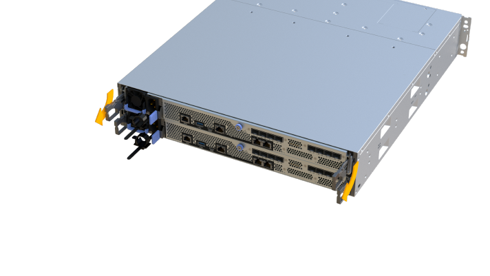
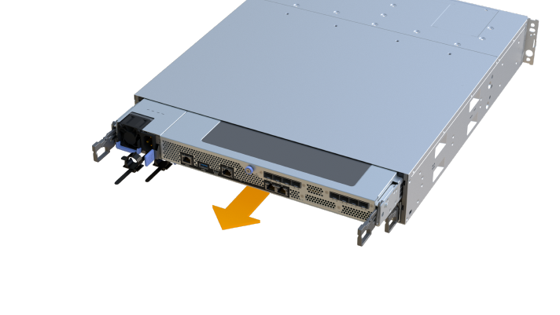
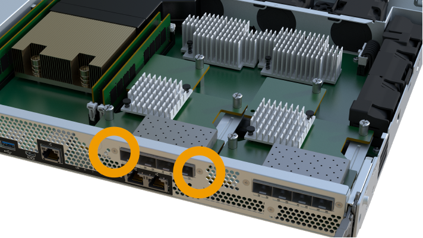
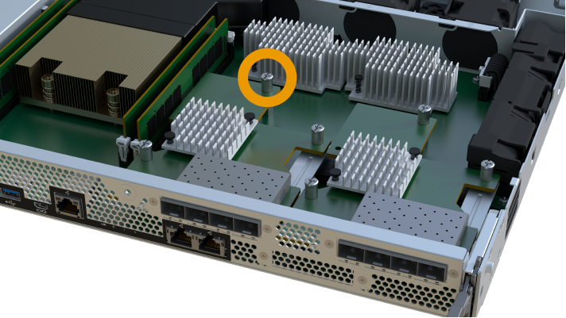
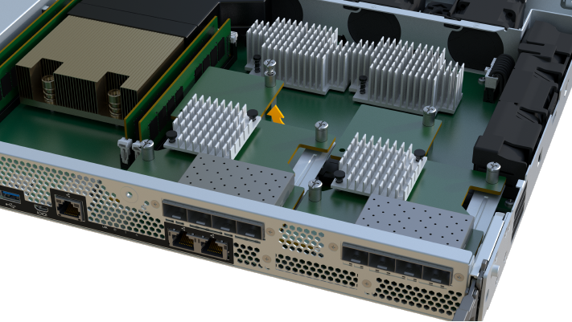
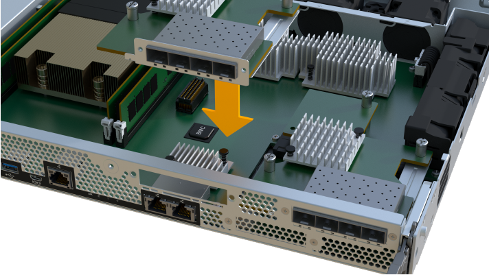
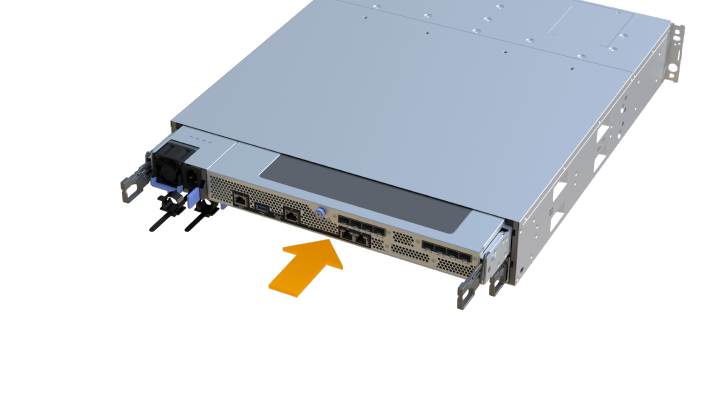

版本資訊
版本資訊
更換EF300或EF600中故障的主機介面卡（HIC）
 建議變更
建議變更
請遵循此程序、更換EF300或EF600陣列中故障的主機介面卡（HIC）。
更換故障的HIC時、您必須關閉儲存陣列電源、更換HIC、然後重新接上電源。
-
為此程序排定停機維護時間。在成功完成此程序之前、您無法存取儲存陣列上的資料。由於兩個控制器在開機時必須具有相同的HIC組態、因此安裝HIC時必須關閉電源。
-
請確定您擁有下列項目：
-
與控制器相容的HIC。
-
或您已採取其他防靜電預防措施。
-
無靜電工作區。
-
用於識別連接至控制器容器的每條纜線的標籤。
-
1號十字螺絲起子。
-
管理站、具備瀏覽器、可存取SANtricity 控制器的《系統管理程式》。（若要開啟System Manager介面、請將瀏覽器指向控制器的網域名稱或IP位址。）

可能遺失資料存取-如果HIC是針對另一個E系列控制器所設計、請勿在EF300或EF600控制器容器中安裝HIC。此外、控制器和兩個HIC必須相同。如果出現不相容或不相符的HIC、則當您使用電源時、控制器會鎖定。
-
步驟1：將控制器離線
將受影響的控制器離線、以便安全地更換HIC。
-
從「還原系統管理程式」檢閱Recovery Guru中的詳細資料、確認電池有問題、並確保不需要先處理其他項目。SANtricity
-
從Recovery Guru的「Details（詳細資料）」區域中、判斷要更換的電池。
-
使用SANtricity NetApp System Manager備份儲存陣列的組態資料庫。
如果移除控制器時發生問題、您可以使用儲存的檔案來還原組態。系統會儲存RAID組態資料庫的目前狀態、其中包含控制器上磁碟區群組和磁碟集區的所有資料。
-
從系統管理員：
-
選取功能表：Support（支援）[Support Center（支援中心）> Diagnostics（診斷）]。
-
選擇*收集組態資料*。
-
按一下「* Collect*」。
檔案會以*組態Data-<arrayName>-<DateTimer>.7z*的名稱儲存在瀏覽器的「下載」資料夾中。
-
-
-
如果控制器尚未離線、請使用SANtricity 「系統管理程式」將其離線。
-
選取*硬體*。
-
如果圖形顯示磁碟機、請選取*顯示磁碟櫃背面*以顯示控制器。
-
選取您要離線的控制器。
-
從內容功能表中選取*離線*、然後確認您要執行此作業。

如果您使用SANtricity 嘗試離線的控制器來存取「無法使用」功能、SANtricity 就會顯示「無法使用」訊息。選擇*連線至替代網路連線*、即可使用SANtricity 其他控制器自動存取《系統管理程式》。
-
-
等候SANtricity 「更新」功能將控制器狀態更新為「離線」。
在更新狀態之前、請勿開始任何其他作業。 -
從Recovery Guru選取* Recheck*、然後確認「Details（詳細資料）」區域中的「OK to remove（確定要移除）」欄位顯示「Yes（是）」、表示移除此元件是安全的。
步驟2：移除控制器容器
移除控制器容器、以便更換故障的主機介面卡。
-
標示連接至控制器容器的每條纜線。
-
從控制器容器拔下所有纜線。
為避免效能降低、請勿扭轉、摺疊、夾緊或踏上纜線。 -
如果HIC連接埠使用SFP+收發器、請將其移除。
視您要升級的HIC類型而定、您可能可以重複使用這些SFP。
-
確認控制器背面的快取作用中LED已關閉。
-
擠壓控制器兩側的握把、然後向後拉、直到它從機櫃中釋放為止。

-
使用兩隻手和握把、將控制器外殼滑出機櫃。當控制器正面脫離機箱時、請用兩隻手將其完全拉出。
請務必用兩隻手支撐控制器容器的重量。 
-
將控制器容器放在無靜電的平面上。
步驟3：移除HIC
移除原始的HIC、以便您以升級後的HIC進行更換。
-
打開單一指旋螺絲並打開機蓋、以取下控制器機箱的機箱蓋。
-
確認控制器內部的綠色LED燈已關閉。
如果此綠色LED亮起、表示控制器仍在使用電池電力。您必須等到LED熄滅後、才能移除任何元件。
-
使用十字螺絲起子、卸下將HIC面板連接至控制器容器的兩顆螺絲。

上圖為範例、您的HIC外觀可能有所不同。 -
卸下HIC面板。
-
使用手指或十字螺絲起子、旋鬆將HIC固定至控制器卡的單一指旋螺絲。

HIC頂端有三個螺絲位置、但只有一個。
上圖為範例、您的HIC外觀可能有所不同。 -
向上提起HIC卡並將其從控制器中取出、以小心地將其從控制器卡上拆下。
請注意、請勿刮傷或撞擊HIC底部或控制器卡頂端的元件。 
上圖為範例、您的HIC外觀可能有所不同。 -
將HIC放置在無靜電的平面上。
步驟4：更換HIC
移除舊的HIC之後、請安裝新的HIC。
|
|
可能遺失資料存取-如果HIC是針對另一個E系列控制器所設計、請勿在EF300或EF600控制器容器中安裝HIC。此外、如果您有雙工組態、則兩個控制器和兩個HIC都必須相同。如果出現不相容或不相符的HIC、則當您使用電源時、控制器會鎖定。 |
-
打開新HIC和新HIC面板的包裝。
-
將HIC上的單一指旋螺絲與控制器上的對應孔對齊、並將HIC底部的連接器與控制器卡上的HIC介面連接器對齊。
請注意、請勿刮傷或撞擊HIC底部或控制器卡頂端的元件。
-
小心地將HIC降低到位、然後輕按HIC接頭以固定。
可能的設備損壞：請務必小心、不要夾住HIC和指旋螺絲之間控制器LED的金帶狀連接器。 
上圖為範例、您的HIC外觀可能有所不同。 -
以手鎖緊HIC指旋螺絲。
請勿使用螺絲起子、否則可能會將螺絲鎖得太緊。
-
使用1號十字螺絲起子、用三顆螺絲將從原始HIC移除的HIC面板裝上。
步驟5：重新安裝控制器容器
更換HIC之後、將控制器外殼重新安裝到控制器機櫃中。
-
放下控制器外殼上的護蓋、然後固定指旋螺絲。
-
在擠壓控制器的握把時、將控制器外殼全部滑入控制器機櫃。
正確安裝到機櫃時、控制器會發出喀聲。 
-
將SFP安裝到新的HIC中、然後重新連接所有纜線。
如果您使用多個主機傳輸協定、請務必在正確的主機連接埠中安裝SFP。
步驟6：完成HIC更換
將控制器置於線上、收集支援資料並恢復作業。
-
將控制器置於線上。
-
在System Manager中、瀏覽至硬體頁面。
-
選擇*顯示控制器背面*。
-
使用更換的主機介面卡選取控制器。
-
從下拉式清單中選取*線上放置*。
-
-
控制器開機時、請檢查控制器LED。
重新建立與其他控制器的通訊時：
-
黃色警示LED會持續亮起。
-
主機連結LED可能會亮起、閃爍或關閉、視主機介面而定。
-
-
當控制器重新連線時、請確認其狀態為最佳、並檢查控制器機櫃的注意LED。
如果狀態不是最佳、或是有任何警示LED亮起、請確認所有纜線都已正確安裝、且控制器機箱已正確安裝。如有必要、請移除並重新安裝控制器容器。
如果您無法解決問題、請聯絡技術支援部門。 -
按一下功能表：硬體[支援>升級中心]以確保SANtricity 安裝最新版本的作業系統。
視需要安裝最新版本。
-
確認所有磁碟區都已歸還給偏好的擁有者。
-
選取功能表：Storage[磁碟區]。從「所有磁碟區」頁面、確認磁碟區已散佈至偏好的擁有者。選取功能表：More（更多）[變更擁有者]以檢視Volume擁有者。
-
如果所有磁碟區均為慣用擁有者、請繼續執行步驟6。
-
如果未傳回任何磁碟區、則必須手動傳回磁碟區。移至功能表：更多[重新分配磁碟區]。
-
如果在自動發佈或手動發佈之後、只有部分磁碟區傳回給偏好的擁有者、您必須檢查Recovery Guru是否有主機連線問題。
-
如果沒有Recovery Guru存在、或遵循Recovery Guru步驟、磁碟區仍不會歸還給偏好的擁有者、請聯絡支援部門。
-
-
使用SANtricity NetApp System Manager收集儲存陣列的支援資料。
-
選取功能表：Support（支援）[Support Center（支援中心）> Diagnostics（診斷）]。
-
選擇*收集支援資料*。
-
按一下「* Collect*」。
檔案會以* support-data.7z*的名稱儲存在瀏覽器的「下載」資料夾中。
-
主機介面卡更換完成。您可以恢復正常作業。